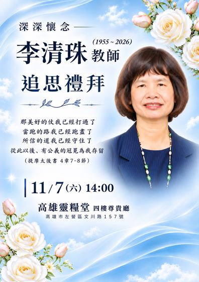

深深懷念
1955.3.17 — 2026.10.24
一生以教導、牧養與陪伴，服事神與人
感謝您與我們一同紀念

衷心感謝每一位在清珠生命中留下恩典足跡的家人與朋友。
雖然畫面有限、無法一一呈現，但相信您們的關懷已化為清珠心中最美的祝福。
雖然不捨，但我們知道清珠已安息主懷，
願天父的慈愛與平安，時刻與您們同在。
Our heartfelt thanks go to every family member and friend who has touched Ching-Chu’s (Alicia) life with love, kindness, and grace.
While we may not be able to include everyone in this video, your love and care will always be a cherished part of her life.
Although saying goodbye is never easy, we find solace in the knowledge that Ching-Chu (Alicia) is now at peace in the loving embrace of our Heavenly Father.
May God’s everlasting love and peace be with each of you, now and always.